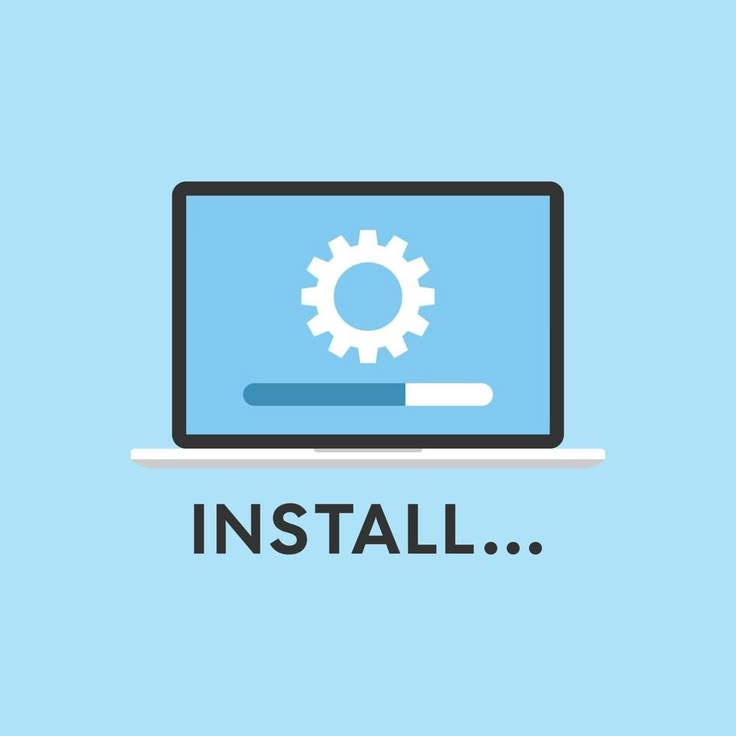
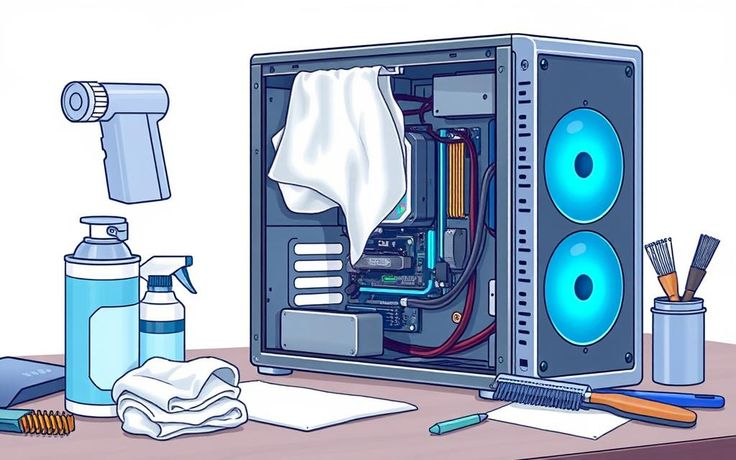
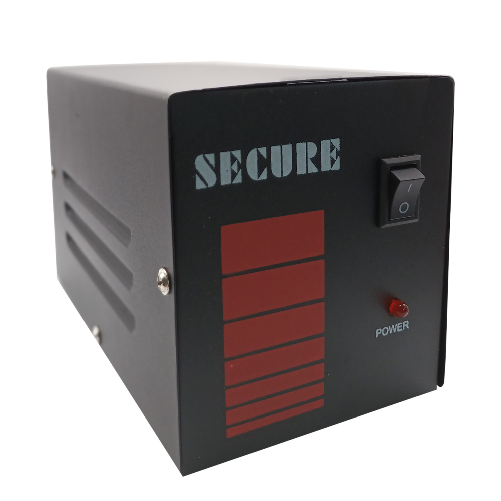

Why Are Computer Components Important?
Every computer component performs a critical function. Understanding how hardware and software work together helps ensure optimal computer speed, smooth multitasking, and extended hardware lifespan.
Hardware Performance
Hardware components such as the CPU, RAM, and storage devices work together to process information, run programs, and store data.
System Efficiency
Properly functioning components allow computers to perform tasks efficiently, reduce delays, and support multitasking.
Productivity and Reliability
Reliable computer systems help users complete schoolwork, professional tasks, communication, and other activities.
Recommended Steps for PC Maintenance
Regular computer maintenance helps keep a device working properly, improves performance, and prevents common technical problems.
-
Keep Your Operating System Updated

Install operating system updates and device driver updates regularly to improve performance, compatibility, and security.
-
Clean Your Computer Regularly

Keep the computer and its surroundings clean. Dust buildup can affect airflow and contribute to overheating.
-
Use Antivirus Protection
Use trusted security software and perform regular scans to help protect your files and system from malware.
-
Manage Your Storage Space
Remove unnecessary files and uninstall applications that are no longer needed to free up storage space.
-
Use a Surge Protector

Connect your computer to a suitable surge protector to help protect it from sudden voltage spikes.